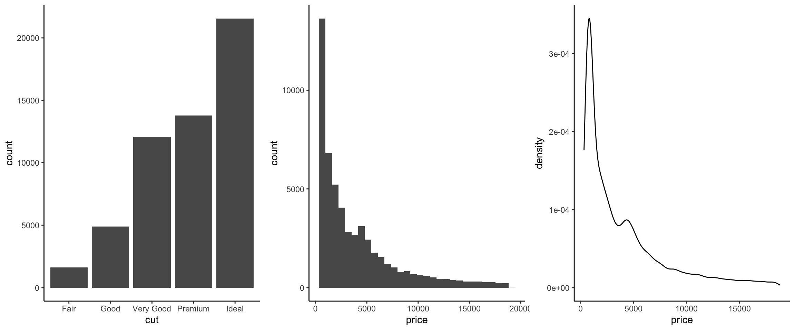
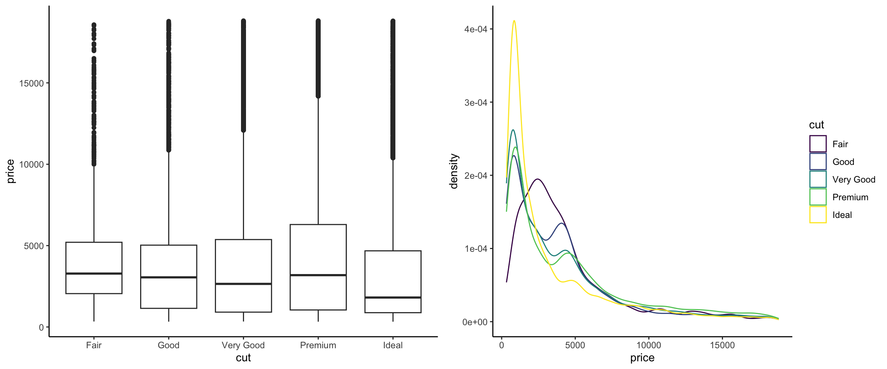
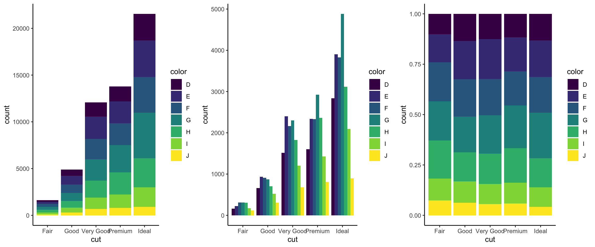
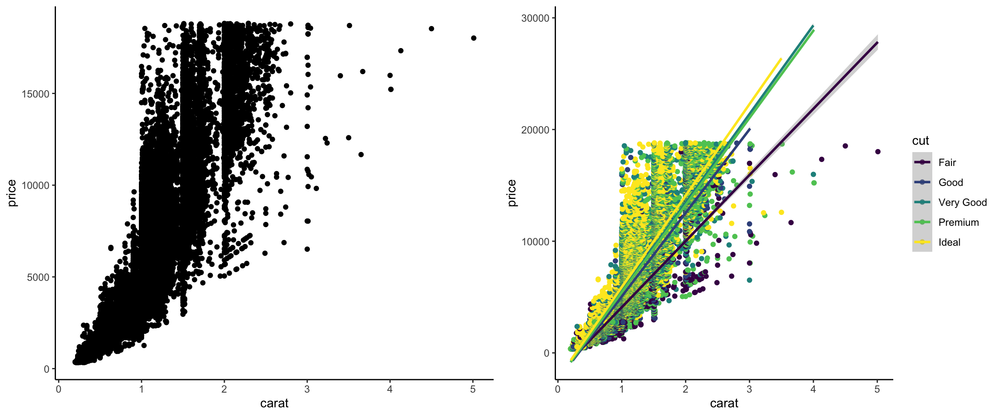

library(ggplot2)
data(diamonds)Schedule
Course Calendar
Readings in the schedule below will sometimes be marked with abbreviations:
- R4DS refers to the online book R for Data Science (2e) by Wickham, Cetinkaya-Rundel, and Grolemund.
- IDSNotes refers to Intermediate Data Science Notes, a set of notes that I have written for this course.
Guiding questions for pre-class readings and videos are available at the bottom of this page.
| Week | Tuesday | Thursday | Announcements |
|---|---|---|---|
| 1 |
1/18: Welcome! Getting to know each other, brainstorming project ideas Before class:
|
||
| 2 |
1/23: Advanced visualization in ggplot2 Before class:
|
1/25: File organization and paths, Git & GitHub Before class:
|
Turn in HW1 by midnight on Monday 1/29. |
| 3 |
1/30: Advanced map visualization Before class:
|
2/1: Advanced map visualization (continued) Before class: |
Turn in HW2 by midnight on Monday 2/5. Prepare for Skills Session 1 next week (2/5-2/9). |
| 4 |
2/6: Interactive visualization Before class: Install the shiny and plotly R packages. Listen to this podcast (timestamp 18:09-25:27). Reflect on the Guiding Question at the bottom of this page. |
2/8: Interactive visualization (continued) Before class: |
Skills Session 1 will be happening this week. Turn in HW3 (includes Project Milestone 1) by midnight on Monday 2/12. |
| 5 |
2/13: Data wrangling Before class: Read Chapters 13-18 in R4DS. |
2/15: Data wrangling and project work time Before class: |
Turn in HW4 and Reflection 1 by midnight on Monday 2/19. |
| 6 |
2/20: Statistical modeling and missing data Before class: |
2/22: Writing functions Before class: Read R4DS Chapter 26 (Functions) and RPDS Section 13.1 (if-else). |
Turn in HW5 (includes Project Milestone 2) by midnight on Monday 2/19. |
| 7 |
2/27: Functions (continued) Before class: |
2/29-3/1: Capstone Days! (No class but please attend talks to support your peers!) | Schedule Skills Session 2 for next week (3/4-3/8) via Calendly. |
| 8 |
3/5: Loops and iteration Before class: Read R4DS Chapter 27 (Iteration) and this tutorial. |
3/7: Loops and iteration (continued) Before class: |
Skills Session 2 will be happening this week. Turn in HW6 (includes Project Milestone 3) by midnight on FRIDAY 3/8. |
| 9 | 3/9-3/17: Spring Break! | ||
| 10 |
3/19: Data acquisition: APIs Before class: |
3/21: Data acquisition: APIs (continued) Before class: |
Turn in HW7 and Reflection 2 by midnight on Monday 3/25. |
| 11 |
3/26: Data acquisition: Scraping Before class: Read the rvest vignette. |
3/28: Project work day Before class: |
Turn in HW8 (includes Project Milestone 4) by midnight on Monday 4/1. |
| 12 |
4/2: Data acquisition: databases Before class: Read R4DS Chapter 22 (Databases). |
4/4: Data acquisition: databases (continued) | Turn in HW9 by midnight on Monday 4/8. |
| 13 | 4/9: Project work time | 4/11: Project work time | Schedule Skills Session 3 for next week (4/15-4/19) via Calendly. |
| 14 | 4/16: Project work time | 4/18: Project work time | Skills Session 3 will be happening this week. |
| 15 | 4/23: | 4/25: Last day of class | Turn in Reflection 3 by midnight on Friday 4/26. |
Guiding Questions
Use the guiding questions/exercises below to focus your pre-class preparations.
1/23: Advanced visualization in ggplot2
To review plot creation skills from STAT/COMP 112 and STAT 155, use the diamonds dataset in the ggplot2 package to recreate the following visualizations:




Solution
library(gridExtra)
p1 <- ggplot(diamonds, aes(x = cut)) + geom_bar() + theme_classic()
p2 <- ggplot(diamonds, aes(x = price)) + geom_histogram() + theme_classic()
p3 <- ggplot(diamonds, aes(x = price)) + geom_density() + theme_classic()
grid.arrange(p1, p2, p3, nrow = 1)
p4 <- ggplot(diamonds, aes(x = cut, y = price)) + geom_boxplot() + theme_classic()
p5 <- ggplot(diamonds, aes(x = price, color = cut)) + geom_density() + theme_classic()
grid.arrange(p4, p5, nrow = 1)
p6 <- ggplot(diamonds, aes(x = cut, fill = color)) + geom_bar() + theme_classic()
p7 <- ggplot(diamonds, aes(x = cut, fill = color)) + geom_bar(position = "dodge") + theme_classic()
p8 <- ggplot(diamonds, aes(x = cut, fill = color)) + geom_bar(position = "fill") + theme_classic()
grid.arrange(p6, p7, p8, nrow = 1)
p9 <- ggplot(diamonds, aes(x = carat, y = price)) + geom_point() + theme_classic()
p10 <- ggplot(diamonds, aes(x = carat, y = price, color = cut)) + geom_point() + geom_smooth(method = "lm") + theme_classic()
grid.arrange(p9, p10, nrow = 1)1/30: Advanced map visualization
After/while watching this video on Coordinate Reference Systems (CRS), answer the following questions:
- What is the shape of the Earth?
- What are the two components of a CRS/GCS?
- Why do we use many different local CRSs rather than just one CRS for the whole earth?
- Why is it insufficient to identify a location by its latitude and longitude?
- Why do we need to be mindful about CRSs when working with different spatial datasets?
Run the following package installation commands:
install.packages(c("sf", "elevatr", "terra", "stars", "tidycensus", "remotes"))
install.packages("USAboundariesData", repos = "http://packages.ropensci.org", type = "source")
remotes::install_github("ropensci/USAboundaries")2/6: Interactive visualization in Shiny
What was new, unexpected, or interesting in the discussion about animations, interactivity, and dashboards?